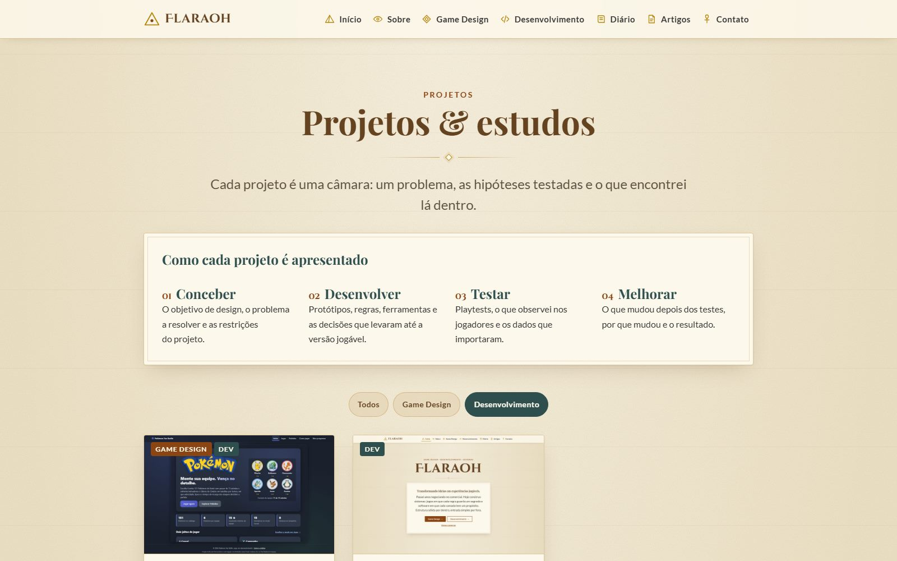
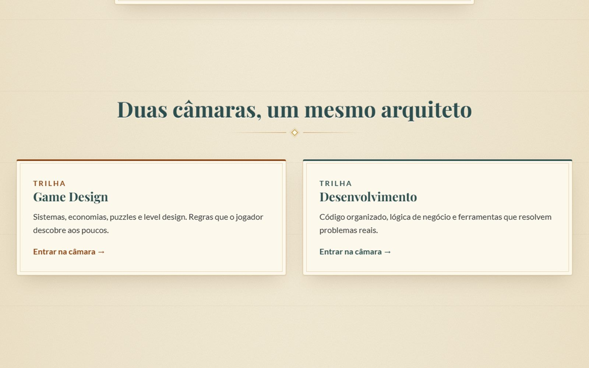
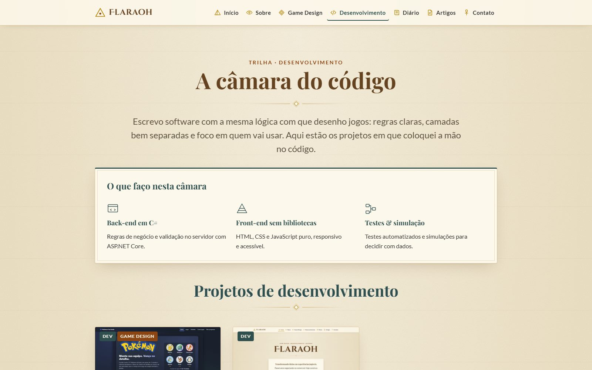

Projetos · Case study
Site Flaraoh
Este site: um portfólio e blog estático, feito à mão em HTML, CSS e JavaScript puro, que apresenta duas trilhas, game design e desenvolvimento, sem que uma apague a outra.

Visão geral
O site reúne projetos, diário de desenvolvimento, artigos e contato, com a persona Flaraoh: pirâmide, templo, câmaras e areia. Ele começou apresentando só game design e foi reorganizado em duas trilhas, cada uma com sua página, sua cor de destaque e seus projetos.
1. Conceber
O problema: apresentar alguém em transição de carreira com dois perfis num site só. Quem chega por uma vaga de games precisa achar game design rápido; quem chega por uma vaga de tecnologia precisa achar código. O público são recrutadores, estúdios e empresas.
Restrições:
- HTML, CSS e JavaScript puro, sem frameworks, bibliotecas ou etapa de build;
- hospedagem compartilhada, com publicação simples;
- responsivo e acessível, inclusive por teclado e leitor de tela;
- uma identidade visual própria e consistente em todas as páginas.
2. Desenvolver
- Identidade em variáveis CSS. Paleta "Deserto Dourado", quatro famílias de fonte, espaçamentos e sombras ficam no
:root. Placas com moldura dupla, separadores com losango e cards são componentes reutilizados em todas as páginas. - Duas trilhas com cor própria. Dourado e marrom para game design, verde-petróleo para desenvolvimento. Um projeto das duas áreas ganha card diferente em cada trilha e um case study com duas portas de entrada.
- Filtros em JavaScript puro. Um só componente filtra projetos por trilha e artigos por categoria, com
aria-pressed, aviso para leitor de tela e parâmetro na URL (?trilha=dev) para abrir já filtrado. - Formulário de contato acessível. Erros ligados a cada campo, assunto pré-selecionado pela URL e um campo-armadilha contra spam.
- Deploy automático. Cada push no Git publica o site pelo cPanel, que copia as páginas e os arquivos para a hospedagem.
3. Testar
As páginas foram revisadas no Chrome e capturadas em modo headless para conferir o resultado final. O site também foi pensado para funcionar sem JavaScript:
- o menu fica sempre visível e o formulário usa a validação do próprio navegador;
- a barra de filtros some e todos os itens aparecem.
Os pares de cor principais têm contraste alto: texto #333 sobre areia (cerca de 12:1) e botões claros sobre marrom (cerca de 7:1). O dourado fica só em detalhes decorativos, nunca em texto.


(ampliar imagem)?trilha=dev: o filtro já chega selecionado.4. Melhorar
O site evoluiu em etapas, cada uma registrada no Git:
- Reestruturação em Projetos, Diário, Artigos e Divulgações, com a página inicial em blocos.
- Duas trilhas: páginas de Game Design e Desenvolvimento, menu novo, filtros e o campo de assunto no contato.
- Projetos reais no lugar dos exemplos: os projetos fictícios saíram e entrou o primeiro case study real.
- Leitura por trilha: o mesmo projeto passou a ter um card e uma porta de entrada para cada perfil de visitante.
Resultados
- 12páginas, sem nenhum framework
- 0dependências ou etapa de build
- ~41 KBde CSS e JavaScript somados, sem compressão
- 2trilhas com cor, página e filtros próprios
O que aprendi
- [PREENCHER: aprendizado]
- [PREENCHER: aprendizado]
Galeria


(ampliar imagem)

(ampliar imagem)